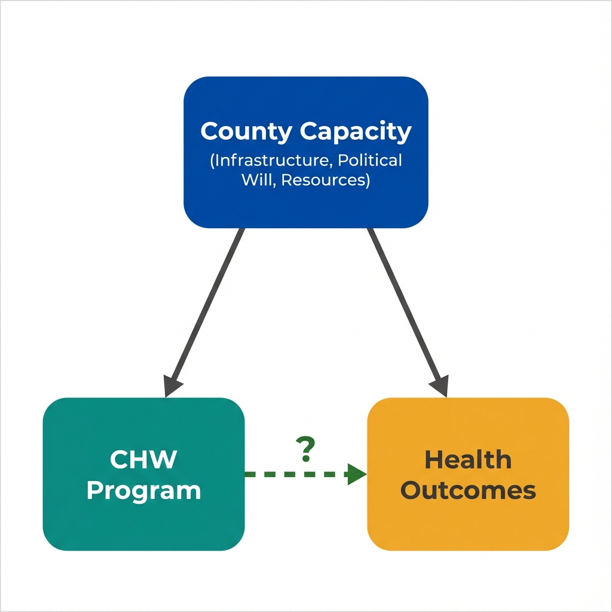

The Data
California's Department of Public Health is evaluating a Community Health Worker (CHW) program. County-level data show a clear positive correlation: counties with more CHW hours have better health outcomes. (Data are simulated for illustration.)
CHW Program Intensity vs Preventable Hospitalizations
Next: Two analysts will interpret this data. Both are competent professionals. Both will reach confident conclusions. Yet their recommendations will be opposites.
Analyst A's Interpretation
Analyst A approaches the data with a focus on statistical association. The question: Is the relationship between CHW programs and health outcomes real and meaningful?
Analyst A
Reasoning Process
Next: Analyst B looks at the exact same data and controls for the same variables. But Analyst B asks a different question entirely.
Analyst B's Interpretation
Analyst B asks: Why do some counties have CHW programs while others don't? The answer to this question changes everything.
Analyst B
Reasoning Process
Next: Same data. Same statistical methods. Opposite conclusions. What explains the difference?
The Difference
Both analysts agree on the data. They disagree on what the data can tell us. The difference lies in one word: identification.
Analyst B's Question
What Is Identification?
A causal effect is identified when the variation in treatment (here, CHW program intensity) is independent of the factors that also affect outcomes.
In this case, identification would require:
- Variation in CHW programs driven by something other than county capacity or political will
- For example: a policy that randomly assigned CHW funding, or a budget cutoff that affected otherwise-similar counties differently
Without identification, we can't distinguish:
- "CHWs caused better outcomes" from
- "Counties that adopt CHWs would have better outcomes anyway"
Next: Why does this distinction matter so much? Because policies based on unidentified effects may fail spectacularly when scaled.
Key Insight
The question "Is the association real?" is necessary but insufficient for policy. The question "Is the effect identified?" determines whether we can act on that association.

County capacity affects both program adoption and health outcomes. The CHW effect cannot be separated from selection effects.
Questions Economists Ask That Others Might Not
Key Takeaway
Statistical significance doesn't equal causal identification. An association can be real, robust, and replicated while still failing to identify a causal effect. The crucial question is whether treatment variation is independent of outcome determinants. Policy changes, randomization, and natural experiments can provide this independence. This is what economists mean by "identification."